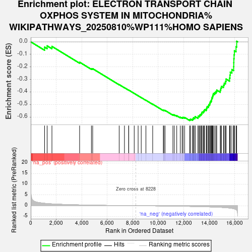
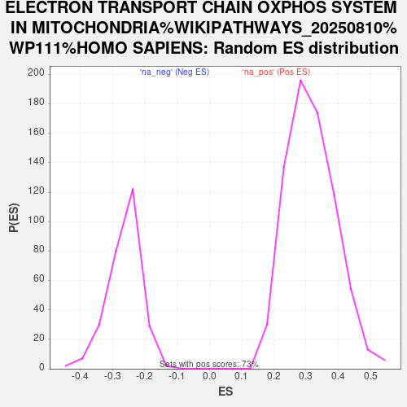

| Dataset | PAL_vs_CTL_ranked |
| Phenotype | NoPhenotypeAvailable |
| Upregulated in class | na_neg |
| GeneSet | ELECTRON TRANSPORT CHAIN OXPHOS SYSTEM IN MITOCHONDRIA%WIKIPATHWAYS_20250810%WP111%HOMO SAPIENS |
| Enrichment Score (ES) | -0.626803 |
| Normalized Enrichment Score (NES) | -2.378882 |
| Nominal p-value | 0.0 |
| FDR q-value | 8.9544686E-4 |
| FWER p-Value | 0.001 |

| SYMBOL | RANK IN GENE LIST | RANK METRIC SCORE | RUNNING ES | CORE ENRICHMENT | |
|---|---|---|---|---|---|
| 1 | SLC25A4 | 1086 | 1.112 | -0.0422 | No |
| 2 | SDHD | 1286 | 1.000 | -0.0320 | No |
| 3 | SLC25A27 | 1662 | 0.845 | -0.0362 | No |
| 4 | NDUFA5 | 3833 | 0.374 | -0.1621 | No |
| 5 | SDHC | 4759 | 0.263 | -0.2134 | No |
| 6 | NDUFC2 | 4859 | 0.252 | -0.2139 | No |
| 7 | ATP5MG | 6937 | 0.080 | -0.3407 | No |
| 8 | NDUFA12 | 7351 | 0.051 | -0.3651 | No |
| 9 | UQCRB | 7682 | 0.031 | -0.3848 | No |
| 10 | UCP2 | 7688 | 0.031 | -0.3844 | No |
| 11 | NDUFS1 | 8117 | 0.005 | -0.4108 | No |
| 12 | NDUFV2 | 8424 | -0.011 | -0.4295 | No |
| 13 | COX17 | 8667 | -0.026 | -0.4439 | No |
| 14 | SCO1 | 9036 | -0.049 | -0.4656 | No |
| 15 | ATP5PO | 9566 | -0.083 | -0.4965 | No |
| 16 | SURF1 | 10400 | -0.142 | -0.5448 | No |
| 17 | NDUFA6 | 10446 | -0.146 | -0.5443 | No |
| 18 | NDUFB8 | 10534 | -0.153 | -0.5463 | No |
| 19 | SLC25A6 | 11150 | -0.202 | -0.5798 | No |
| 20 | COX7A2L | 11259 | -0.210 | -0.5818 | No |
| 21 | NDUFS4 | 11453 | -0.227 | -0.5886 | No |
| 22 | SLC25A14 | 11732 | -0.253 | -0.6001 | No |
| 23 | SDHB | 11876 | -0.267 | -0.6030 | No |
| 24 | NDUFV3 | 11952 | -0.274 | -0.6014 | No |
| 25 | NDUFA9 | 12072 | -0.287 | -0.6024 | No |
| 26 | NDUFB6 | 12468 | -0.333 | -0.6193 | Yes |
| 27 | UQCRFS1 | 12533 | -0.341 | -0.6156 | Yes |
| 28 | NDUFB2 | 12692 | -0.360 | -0.6173 | Yes |
| 29 | ATP5ME | 12743 | -0.367 | -0.6121 | Yes |
| 30 | ATP5PB | 12768 | -0.369 | -0.6053 | Yes |
| 31 | UQCRQ | 12877 | -0.383 | -0.6033 | Yes |
| 32 | COX7A2 | 12892 | -0.385 | -0.5956 | Yes |
| 33 | UQCRH | 13123 | -0.415 | -0.6004 | Yes |
| 34 | NDUFS5 | 13138 | -0.417 | -0.5919 | Yes |
| 35 | ATP5MF | 13236 | -0.432 | -0.5882 | Yes |
| 36 | COX11 | 13280 | -0.439 | -0.5810 | Yes |
| 37 | NDUFA13 | 13361 | -0.450 | -0.5758 | Yes |
| 38 | COX7C | 13412 | -0.459 | -0.5686 | Yes |
| 39 | COX7B | 13439 | -0.463 | -0.5598 | Yes |
| 40 | NDUFA4 | 13540 | -0.479 | -0.5552 | Yes |
| 41 | COX6B1 | 13594 | -0.485 | -0.5475 | Yes |
| 42 | NDUFB5 | 13641 | -0.493 | -0.5393 | Yes |
| 43 | NDUFB3 | 13774 | -0.518 | -0.5358 | Yes |
| 44 | UCP3 | 13799 | -0.521 | -0.5255 | Yes |
| 45 | ATP5F1D | 13839 | -0.530 | -0.5160 | Yes |
| 46 | UQCRC1 | 13942 | -0.548 | -0.5100 | Yes |
| 47 | DMAC2L | 13970 | -0.553 | -0.4992 | Yes |
| 48 | NDUFA10 | 14043 | -0.566 | -0.4910 | Yes |
| 49 | ATP5F1E | 14069 | -0.571 | -0.4796 | Yes |
| 50 | ATP5MC3 | 14128 | -0.585 | -0.4701 | Yes |
| 51 | UQCR10 | 14188 | -0.597 | -0.4603 | Yes |
| 52 | UQCRC2 | 14198 | -0.599 | -0.4473 | Yes |
| 53 | NDUFA11 | 14248 | -0.610 | -0.4366 | Yes |
| 54 | NDUFA3 | 14283 | -0.618 | -0.4248 | Yes |
| 55 | NDUFS6 | 14319 | -0.625 | -0.4129 | Yes |
| 56 | COX6A2 | 14426 | -0.645 | -0.4050 | Yes |
| 57 | NDUFS8 | 14525 | -0.669 | -0.3960 | Yes |
| 58 | NDUFB4 | 14592 | -0.687 | -0.3846 | Yes |
| 59 | NDUFB1 | 14867 | -0.763 | -0.3844 | Yes |
| 60 | COX8A | 14906 | -0.779 | -0.3692 | Yes |
| 61 | COX7A1 | 14957 | -0.794 | -0.3544 | Yes |
| 62 | SLC25A5 | 15119 | -0.851 | -0.3452 | Yes |
| 63 | COX5A | 15180 | -0.872 | -0.3293 | Yes |
| 64 | COX6A1 | 15277 | -0.919 | -0.3146 | Yes |
| 65 | ATP5MC2 | 15323 | -0.936 | -0.2963 | Yes |
| 66 | NDUFAB1 | 15596 | -1.098 | -0.2884 | Yes |
| 67 | NDUFB7 | 15624 | -1.117 | -0.2649 | Yes |
| 68 | UQCR11 | 15653 | -1.134 | -0.2411 | Yes |
| 69 | NDUFB9 | 15778 | -1.240 | -0.2209 | Yes |
| 70 | NDUFC1 | 15915 | -1.399 | -0.1978 | Yes |
| 71 | SDHA | 15924 | -1.413 | -0.1665 | Yes |
| 72 | COX4I1 | 15931 | -1.423 | -0.1348 | Yes |
| 73 | NDUFA2 | 15950 | -1.447 | -0.1033 | Yes |
| 74 | NDUFS3 | 15974 | -1.480 | -0.0715 | Yes |
| 75 | ATP5IF1 | 16104 | -1.799 | -0.0389 | Yes |
| 76 | NDUFB10 | 16155 | -2.071 | 0.0046 | Yes |
